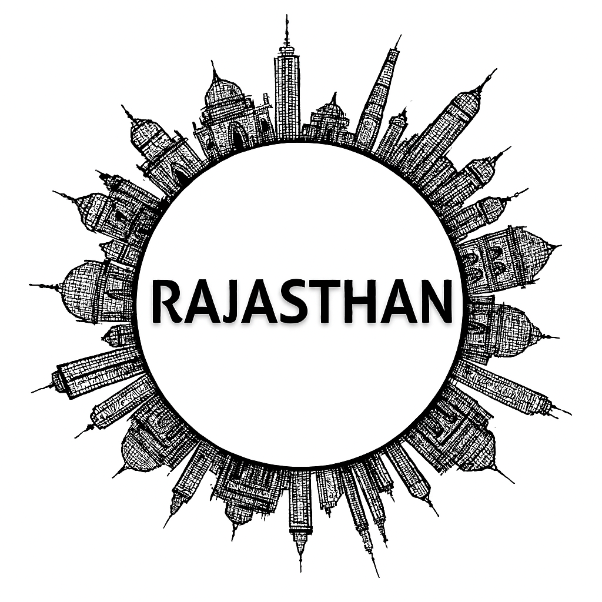

Gujarat
Rajasthan apne registaan, rajwade aur virasat ke liye mashhoor hai. Yahan ke shandar forts aur palaces jaise Jaipur ka Amber Fort, Jodhpur ka Mehrangarh Fort, aur Udaipur ka City Palace duniya bhar ke paryatak ko akarshit karte hain. Rajasthan ke rangin lokgeet, ghoomar nritya, aur teej-festivals iski sanskritik pehchaan hain. Rajya ki arthvyavastha mein tourism, handicrafts, aur mining ka bada yogdaan hai. Rajdhani Jaipur hai, aur sabse bada shehar bhi wahi hai.
Rajasthan, the “Land of Kings,” is a state where history, culture, and natural beauty come together in magnificent harmony. Known for its grand forts like Mehrangarh and Chittorgarh, palaces such as Udaipur’s Lake Palace and Jaipur’s Hawa Mahal, and the golden sands of the Thar Desert, it offers travelers a glimpse into India’s royal past. The vibrant traditions of folk music, dance, and colorful festivals like Pushkar Fair and Teej keep its cultural spirit alive, while its cuisine—Dal Baati Churma, Laal Maas, and Ghevar—adds flavor to the experience. With wildlife sanctuaries like Ranthambore, bustling bazaars of handicrafts, and the charm of cities like Jaipur, Jodhpur, Udaipur, and Jaisalmer, Rajasthan stands as a timeless destination that celebrates both heritage and hospitality.
Rajasthan Tourist Attractions
| City | Attraction | Description |
|---|---|---|
| Jaipur | Amber Fort | Majestic hilltop fort blending Rajput and Mughal architecture, overlooking Maota Lake. |
| Hawa Mahal | Iconic “Palace of Winds” with 953 jharokhas, built for royal women to view street festivals. | |
| City Palace | Royal residence of Jaipur’s Maharajas, showcasing courtyards, museums, and regal heritage. | |
| Jantar Mantar | UNESCO World Heritage astronomical observatory, featuring giant instruments for celestial study. | |
| Udaipur | City Palace | Magnificent lakeside palace complex, blending Rajasthani and Mughal styles with panoramic views. |
| Lake Pichola | Scenic artificial lake surrounded by palaces, ghats, and temples, offering boat rides at sunset. | |
| Jag Mandir | Island palace on Lake Pichola, known as “Lake Garden Palace,” a retreat for royalty. | |
| Jodhpur | Mehrangarh Fort | Massive hilltop fort with intricate palaces, museums, and sweeping views of the Blue City. |
| Umaid Bhawan Palace | Grand palace built in the 20th century, part luxury hotel and museum of royal heritage. | |
| Mandore Gardens | Historic gardens with cenotaphs, temples, and memorials of Marwar rulers. | |
| Jaisalmer | Jaisalmer Fort | Living fort with golden sandstone walls, housing shops, temples, and havelis. |
| Patwon Ki Haveli | Cluster of ornate havelis with intricate carvings, reflecting merchant wealth and artistry. | |
| Sam Sand Dunes | Desert dunes near Jaisalmer, famous for camel safaris and cultural performances at sunset. | |
| Pushkar | Pushkar Lake | Sacred lake surrounded by ghats, central to Hindu pilgrimage and rituals. |
| Brahma Temple | Rare temple dedicated to Lord Brahma, attracting devotees from across India. | |
| Mount Abu | Dilwara Temples | Exquisite Jain temples renowned for marble carvings and spiritual serenity. |
| Nakki Lake | Picturesque lake surrounded by hills, a popular spot for boating and leisure. |
State Overview Video